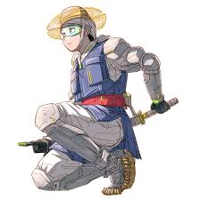

홍길동의 초능력

괴력: 천근(600kg)이나 되는 초부석이라는 바위를 들어 수십걸음을 걸을 정도.
분신술: 홍길동의 초능력 중에서도 가장 유명한 능력. 허수아비를 매개로 만들며, 분신들이 제각기 사고판단이 가능하기 때문에 한번에 8명의 홍길동이 전국 팔도에서 활약하다가 단체로
잡혀와서 대신들을 조롱하는 장면이 유명하다.
소환술: 황건역사 같은 신장(神將)들을 소환해 부릴 수 있다.